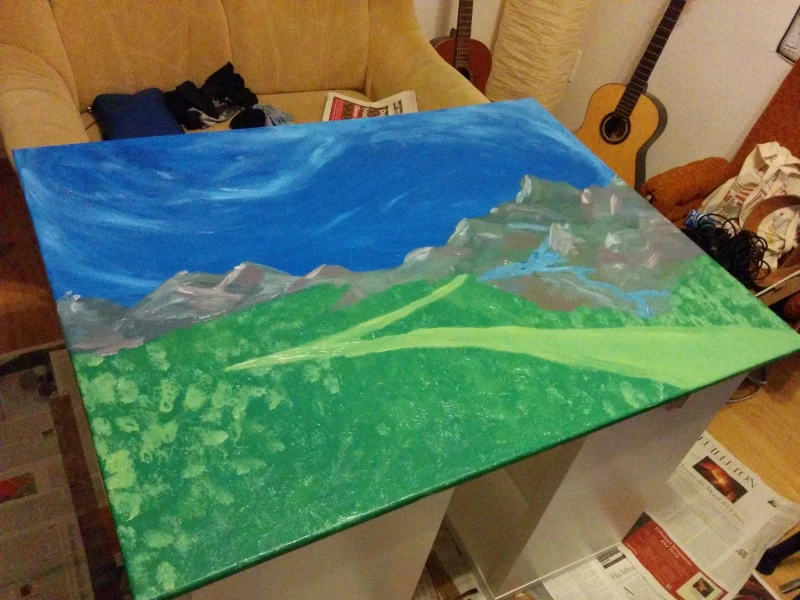
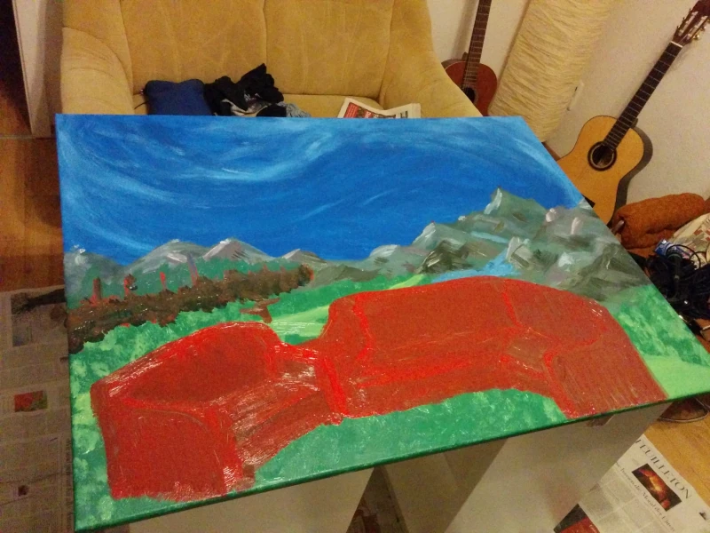
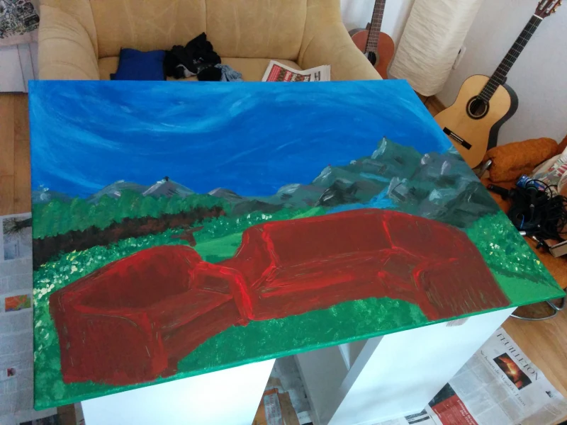
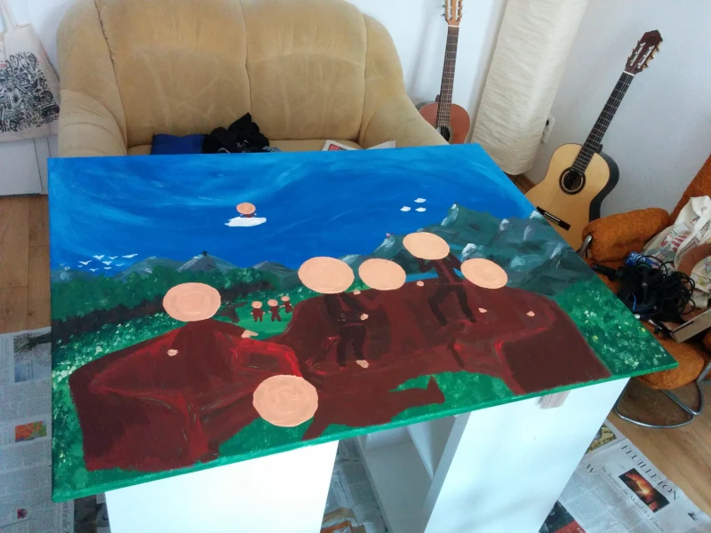
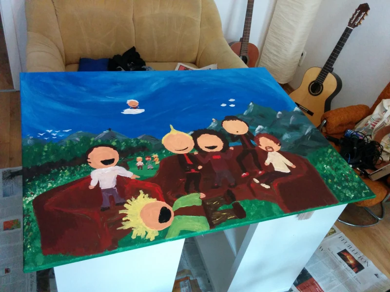

Let's get on with it
Groundwork
The ground layer of the painting consists of a lush green foreground and an alpine background scene. A path to the top of the mountains winds its way right by the spectator of the scene.
A sofa
The next step was to add a comfy place to put our characters in. As memory serves the scene I had in mind played out on and around a flock of sofas.
More details
I put another layer of a darker shade of red on the sofa for more details. This step also included adding details like blossoms on the greenery.
Faceless figures
Now that the basic composition is set in stone - or rather in flesh, inside my head - I proceeded to add the silhouettes of our South Park look-a-likes into the scene.
Faces without eyes
After the paint had dried I added more details to the characters like hair, mouths and clothing. A big chunk of respect had me postponing adding in the eyes, as these would determine the final look.
Finally done
The characters' eyes included I finished up the painting by adding more detail around the whole canvas.
Verdict
Another project finished. After initial problems getting the scene in my head on the canvas I'm pleased with the overall result. The South Park style characters work really well with the environment they're set in.
In hindsight the work is probably a tad too big for a random birthday gift, ah well...
∎